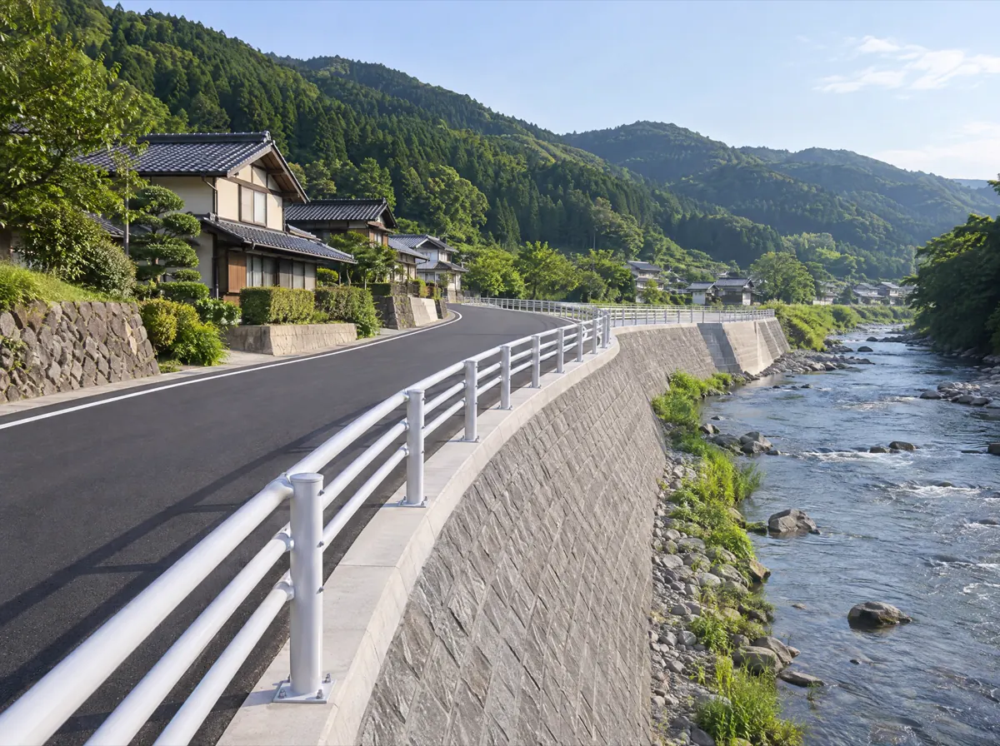
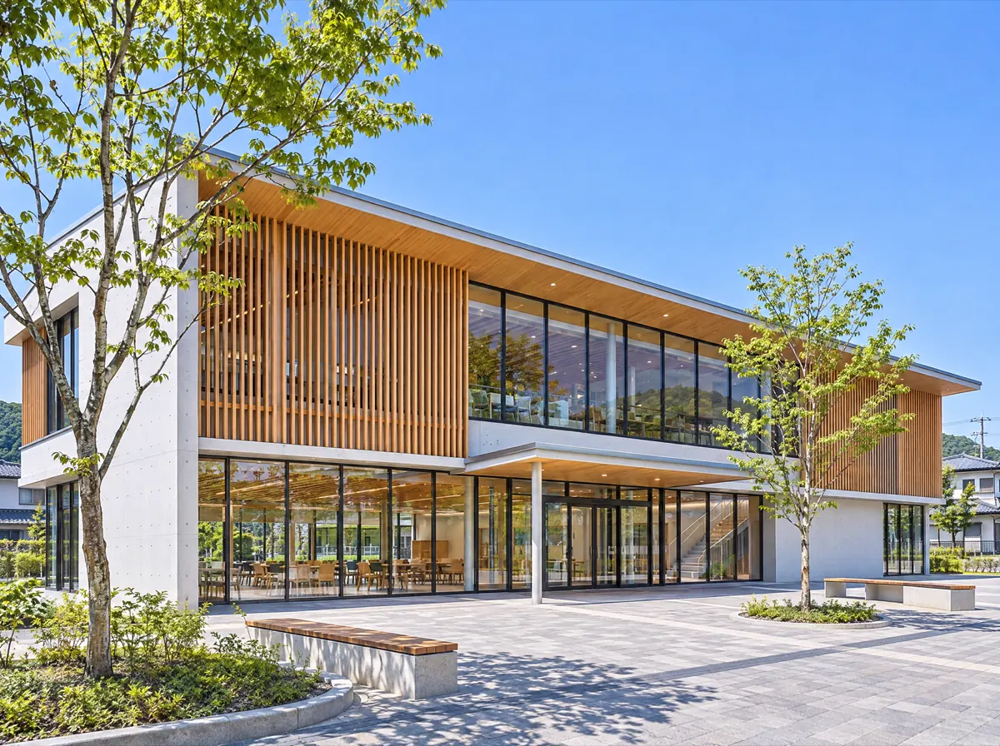
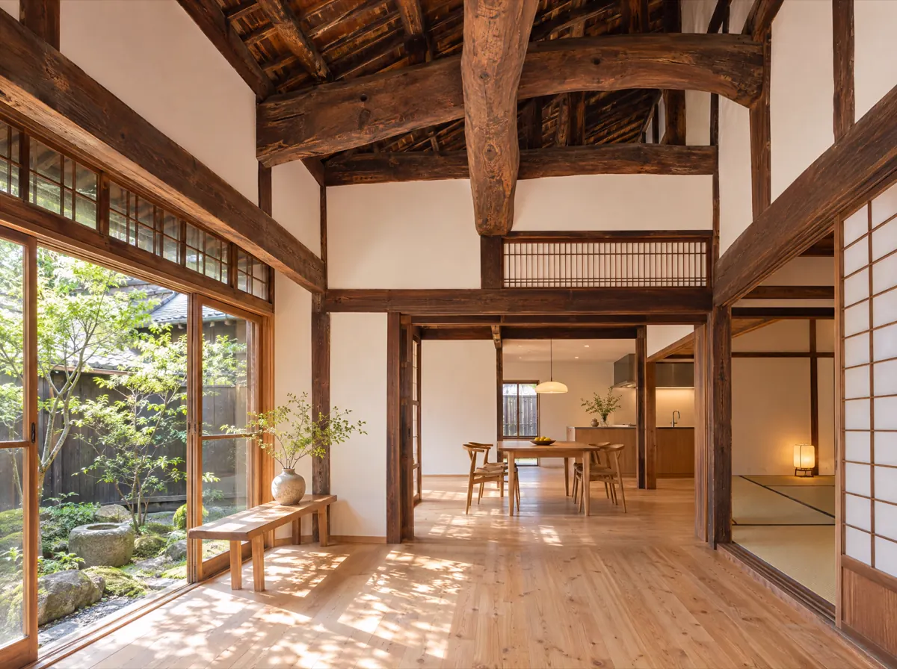
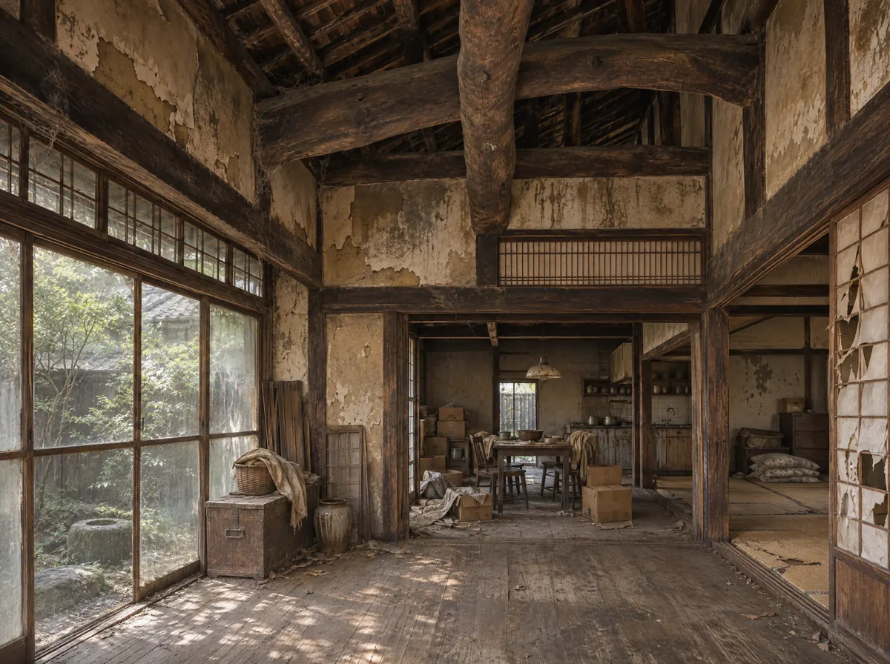
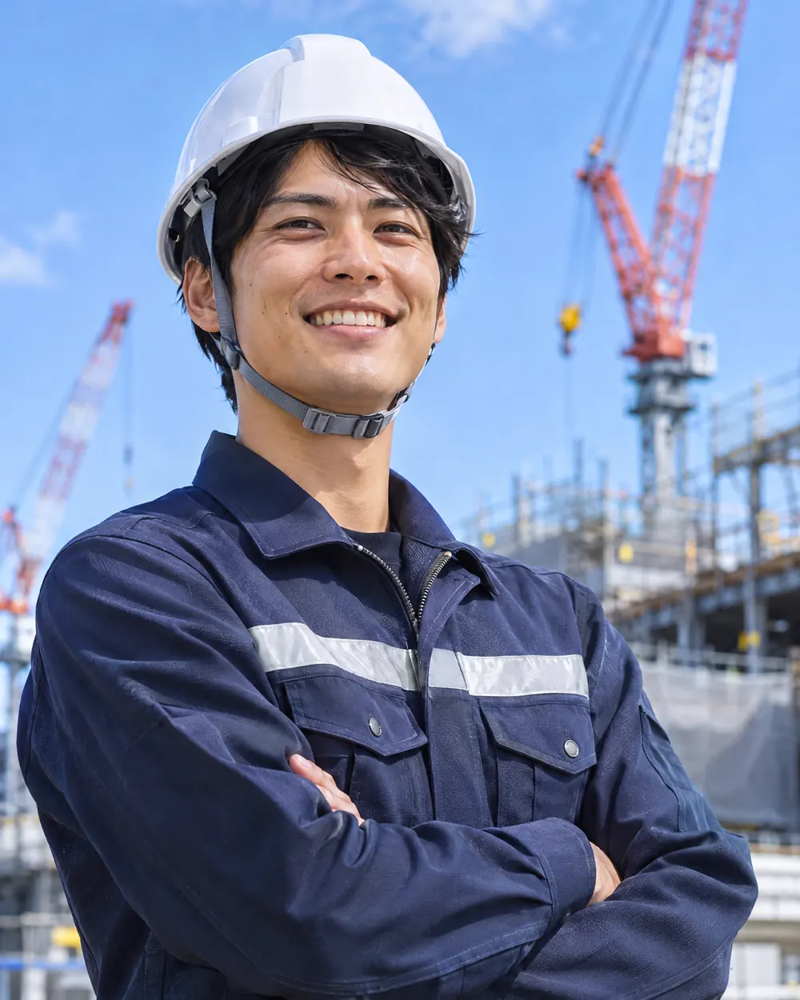

土木工事
道路・河川・橋梁などの公共工事。災害のあとの復旧も、いちばんに駆けつけます。
BUILDTHE EVERYDAY
道路、橋、学校、そして家。
1968年から、この町の毎日を支えてきました。
ABOUT US
雨の日も渋滞しない道。地震が来ても揺れに耐える校舎。わたしたちの仕事は、完成したあと、誰も気にしなくなるくらい「あたりまえ」になることがゴールです。
地元の職人と一緒に、設計から施工、完成後の点検まで。半世紀以上、この町だけを見てきた会社だからできる仕事があります。
代表取締役 千景 恒一（架空）
創業
1968年
施工実績
1,280件
社員数
48名
施工管理技士
32名
※数字はすべてサンプルです（架空の会社の例）。
BUSINESS

道路・河川・橋梁などの公共工事。災害のあとの復旧も、いちばんに駆けつけます。

学校・公民館・店舗・工場。地域の人が集まる建物を、設計段階から一緒に考えます。

受け継いだ家を、これからも住める家に。古い梁や柱を活かした改修が得意です。
BEFORE / AFTER
つまみを左右に動かすと、改修の前と後を見比べられます。

※改修前・改修後の写真はAI生成のイメージです。
WORKS
土木千景川橋 架け替え工事
建築みなみ地区 公民館 新築工事
土木県道12号 護岸・道路改良工事
MOVIE
現場の音、職人の手、完成した日の景色。写真だけでは伝わらない仕事の空気を、動画にまとめました。
※サンプルのため、5秒のループ映像だけを入れています（AI生成）。撮影から編集まで担当した実際の映像の例：研修紹介PV（株式会社プレゼンスメディカル様）
